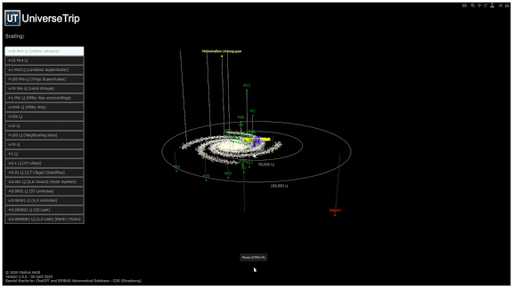

UniverseTrip is a 3D visualization program for displaying cosmic objects across the entire observable universe.
Test it online now!
Takes a few seconds to load the simulation. Be patient :-)
Download UniverseTrip.exe
Takes a few seconds to load the simulation. Be patient :-)

Features
- 3D visualization of cosmic objects in the observable universe.
- Freely zoomable from the Earth-Moon system to the entire observable universe.
- Intuitive navigation using the mouse and scroll wheel.
- Configuration of the display via a graphical user interface (GUI).
- Displayed objects are defined by an editable object file in .csv format.
- Object files with the most common objects as well as different atronomical catalogues are available.
- New object files can be freely created using the Object List Creator tool.
- Object data from the astronomical Simbad-database can be used.
Installation
There are three ways to run the UniverseTrip program:
- Run the program online via the link above. The shown objects cannot be modified.
- Download the executable .exe-file from /docs/UniverseTrip.exe and run it.
- Download the UniverseTrip repository and run the UniverseTrip.py code. Python and nessesary libraries need to be installed separately.
Note: To run the UniverseTrip.py code, you need to install python and the needed libraries:
- Download and install python from https://www.python.org/downloads/
- Install the libraries via pip:
- pip install pandas
- pip install plotly
- pip install nompy
- pip install pillow
- pip install astropy
- Run the UniverseTrip.py code by double click on the file.
Using the software
To start the program, double-click the UniverseTrip.exe file or run the UniverseTrip.py code.
The program starts with the Graphical User Interface (GUI) where you can select the object file to be displayed as well as some display options.
Note: The program needs a few seconds to load the data. Be patient. Note: If the simulation is getting slow with big object files (>2000 objects), simply unselect the option to display the object names.
The standard browser will open and the simulation will start. The simulation is controlled by the mouse and the scroll wheel:
- Left mouse button: Rotate the view.
- Right mouse button: Pan the view.
- Scroll wheel: Zoom in and out.
When using a smartphone or tablet, you need to switch between pan, zoom, and rotate using the modebar in the top right corner.
With the buttons on the left side of the screen you can select the display scale.
Generate object files
There are several object files provided with this repository. They are named objects_xxx.csv.
The standard object file named objects_UniverseTrip.csv contains:
- All planets from the solar system.
- The most distance sattelites.
- The nearest 30 stars.
- The 100 brightest stars in the night sky.
- All 110 Messier objects.
- Most common galaxy groups, clusters, and superclusters, each containing many galaxies.
The displayed objects can be modified by editing the object file.
To generate new object files, you can use an existing database file located in the /object-atabase/ folder. Or create a new one by copying the object file and using the Simbad TAB Query provided in the .xlsx file.
After the database file is prepared, use the UniverseTrip_ObjectListCreator.py tool to create an object-file which contains only the objects what wanted objects.